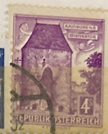
| SOURCE | TITLE| IMAGE MATCH | click to source page |
| HipStamp | Austria # 627 Vienna Hainburg Gate 4s. (1) Mint NH | Europe - Austria, General Issue Stamp / HipStamp | 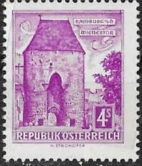 |
| eBay | AUSTRIA 627 (Mi1051x) - Architecture "1960 Vienna Gate, Hainburg" (pb77876) | eBay | 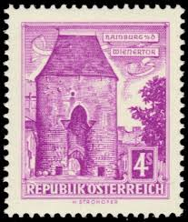 |
| eBay.de | Gestempelte Briefmarken aus Österreich (1960-1969) online kaufen | eBay.de | 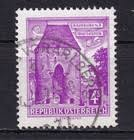 |
| Alamy | Austria postage stamp hi-res stock photography and images - Page 11 - Alamy | 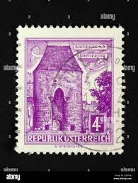 |
| StampData | Austria - 4s stamp of 1960 (#8298) | StampData | 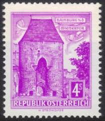 |
| Cherrystone Auctions | Rare Stamps & Postal History of the World - November 12-13, 2019 - Lot #342 | 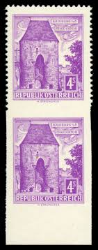 |
| Alamy | AUSTRIA - CIRCA 1960: a stamp printed in the Austria shows Vienna Gate, Hainburg, circa 1960 Stock Photo - Alamy | 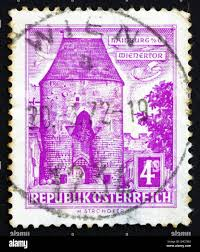 |
| Todocolección | austria yvert num. 1033 usado - Buy Antique stamps of Austria on todocoleccion | 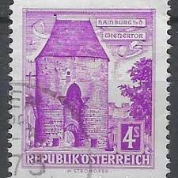 |
| Flickr | World Postal Stamps | Flickr | 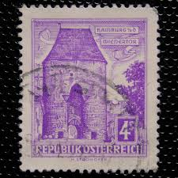 |
| Shutterstock | 1+ Thousand Purple Vienna Royalty-Free Images, Stock Photos & Pictures | Shutterstock | 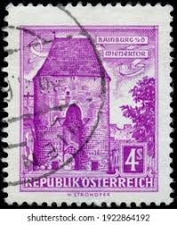 |
| Alamy | Photo of a postage stamp from Austria Vienna Gate Hainburg Lower Austria Buildings series 1960 Stock Photo - Alamy | 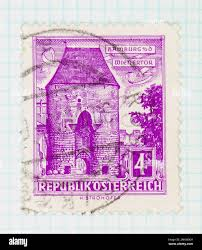 |
| Dreamstime.com | Vienna Gate, Hainburg (Lower Austria), Buildings. Serie, Circa 1960 Editorial Photo - Image of retro, tower: 140381951 | 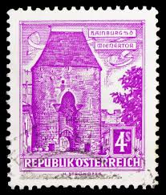 |
| Alamy | Architectural series hi-res stock photography and images - Alamy | 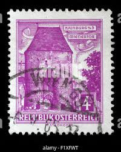 |
| Old-Stamps.com | Hainburg - Wienertor / Republik Österreich 1960 | 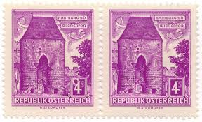 |
| Alamy | Hainburg an der donau Cut Out Stock Images & Pictures - Alamy | 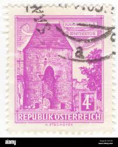 |
| Shutterstock | Karnal Haryana India -august 5th 2025-closeup Stock Photo 2671489781 | Shutterstock | 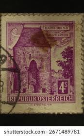 |
| ebid.net | Czech stamps 1968 - SG1749-54 Praga 1968 Stamp Ex - 4th Series (unused) on eBid United Kingdom | 160288524 | 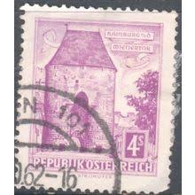 |
| Shutterstock | November 10 2025 Jakarta Indonesia Postage Stock Photo 2707917115 | Shutterstock | 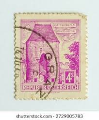 |
| iStock | Israel Western Wall Postage Stamp Stock Photo - Download Image Now - Arab Culture, Arabic Style, Black Background - iStock | 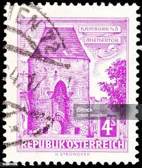 |
| Dreamstime.com | Vienna Gate, Hainburg Lower Austria Editorial Stock Photo - Image of construction, entrance: 182167283 | 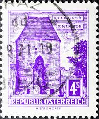 |
| Alamy | Austria postage stamp hi-res stock photography and images - Page 3 - Alamy | 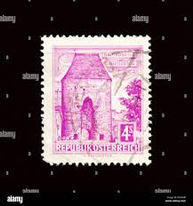 |
| Dreamstime | The Vienna Gate Entrance into the Castle District in Budapest Stock Photo - Image of dome, castle: 188509618 | 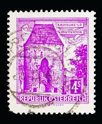 |
| Alamy | Hans strohofer hi-res stock photography and images - Alamy | 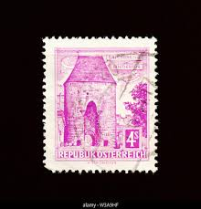 |
| Etsy | österreich Cent - Etsy | 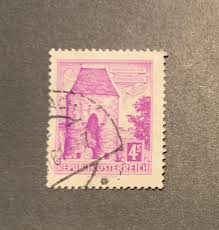 |
| iStock | Cathedrals Stock Photo - Download Image Now - Architecture, Cancellation, Cathedral - iStock | 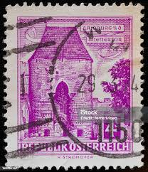 |
| eBay | Austria 1960 4s Buildings Vienna Gate Hainburg MNH** Stamp A23P60F15610 | eBay | 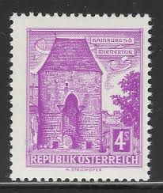 |
| Dreamstime.com | Austria, Hainburg an Der Donau, Europe - July 05, 2025: a Vintage Weathered Vespa Scooter with the Number 73 on Its Editorial Stock Image - Image of number, style: 391259174 | 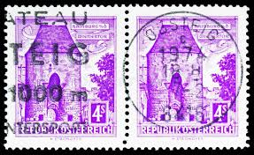 |
| www.briefmarken-forum.com | Bauwerke und Baudenkmäler "Bautenserie" - Seite 2 | 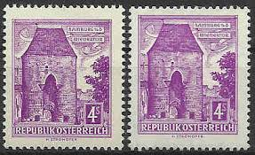 |
| Todocolección | osterreich austria 5 kr. kais konigl año 1886. - Buy Antique stamps of Austria on todocoleccion | 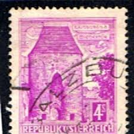 |
| Dreamstime.com | The Vienna Gate Entrance into the Castle District in Budapest at Night Stock Image - Image of bank, basilica: 188516687 | 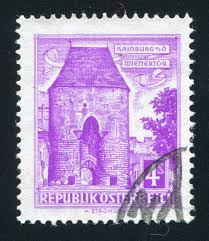 |
| 123RF | FRENCH MOROCCO CIRCA 1939: A Stamp Printed In Morocco Shows Mosque At Sefrou Circa 1939. Stock Photo, Picture and Royalty Free Image. Image 41007295. | 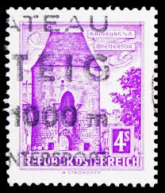 |
| Pngtree | Gambar Hainburg Latar Belakang, Hainburg Vektor Latar Belakang dan Foto PSD untuk Muat turun Percuma | Pngtree | 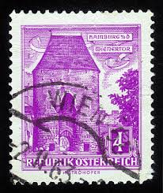 |
| Todocolección | austria-1901- usado - emperador fco. josé.- (co - Buy Antique stamps of Austria on todocoleccion | 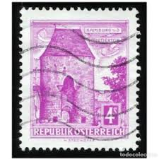 |
| Todocolección | sd)1980s, austria, tourism, freistadt castle, s - Buy Antique stamps of Austria on todocoleccion | 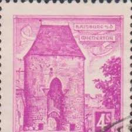 |
| Dreamstime.com | AUSTRIA - CIRCA 1981: Stamp Printed in Austria Shows Portrait of Sigmund Freud, Neurologist, Founder of Psychoanalysis, a Clinical Editorial Image - Image of analysis, freud: 184758520 | 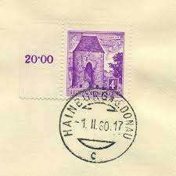 |
| Shutterstock | 19 Schilling Tower Royalty-Free Images, Stock Photos & Pictures | Shutterstock | 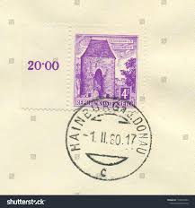 |
| Find Your Stamps Value | Value of the hashemite kingdom of jordan 40 fils stamps | 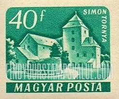 |
| Find Your Stamps Value | Value of magyar posta 5 ft stamps | 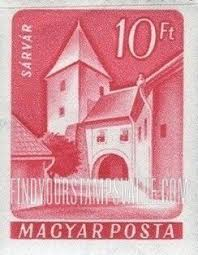 |
| Alamy | Vintage postage stamps from Austria on a white background Stock Photo - Alamy | 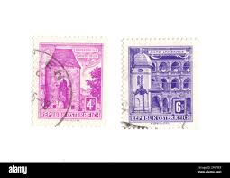 |
| eBay | Austria Architecture Stamps for sale | eBay | 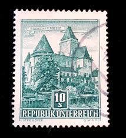 |
| eBay | STAMP Austria 5.50s CHURERTOR FELDIDIRCH 1960 NOT HINGED | eBay | 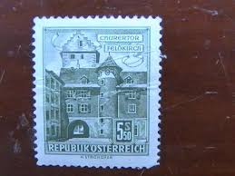 |
| Stamp Community Forum | Austrian Stamp Printing Techniques - Stamp Community Forum | 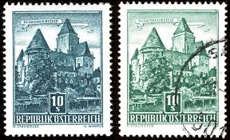 |
| Aukcijska Kuća Barac&Pervan | Barac&Pervan Auctions • Item | 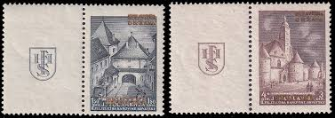 |
| Stamp Auction | Cherrystone Auctions Sale - 1220 Page 14 | 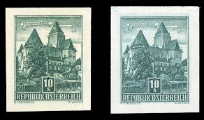 |
| eBay | 419107/ Reklamemarke – Bund der Deutschen in Niederösterreich - Hainburg a.D. | eBay | 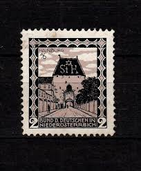 |
| postbeeld.com | Stamp 1976, Austria Definitives 2v, 1976 - Collecting Stamps - PostBeeld - Online Stamp Shop - Collecting | 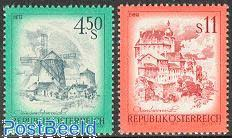 |
| eBay | Used Error, Variety Hungarian Stamps for sale | eBay | 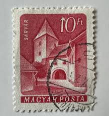 |
| BalkanAuction | Postage stamps | Philately | Collectibles | BalkanAuction | 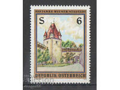 |
| eBay | ISRAEL ALTNEUSCHUSET OF FOUR COLOR SEPARATION CARDS PRAQUE '88 MINT | eBay | 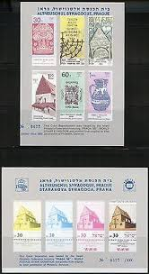 |
| eBay | AUSTRIA SCOTT CATALOG 630 STAMP MNH | eBay | |
| BalkanAuction | Postage stamps | Philately | Collectibles | BalkanAuction | |
| eBay UK | Austrian Architecture Stamps for sale | eBay UK | |
| Filatelia Kevorkian | MONACO/STAMPS, 1933-1937 - LANDESCAPES - YV 128a - 1 VALUE - HINGED - Filatelia Kevorkian | |
| eBay | Autriche 1037-1038 (complète edition) oblitéré 1957 timbres (10100362 | eBay | |
| Flickr | Stamps Croatia NDH | Flickr | |
| eBay.de | Österreich Austria 1973 ** Mi.1430/33 Freimarken Landschaften Landscapes Defs | eBay.de | |
| eBay | FREE SHIP Austria Beautiful 1976 Windmill Castle Landscape Tourism (stamp) MNH | eBay | |
| eBay | Republik Osterreich Foreign 10s Green Stamp Used - #A740 | eBay | |
| Stamp Auction | Daniel F. Kelleher Auctions, LLC Sale - 743 Page 4 |